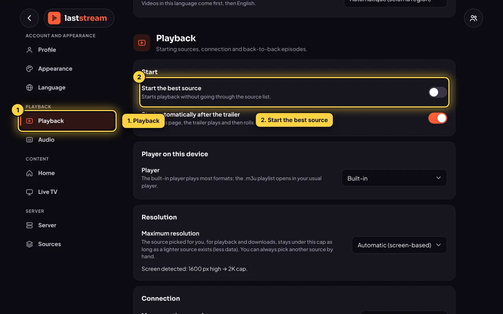
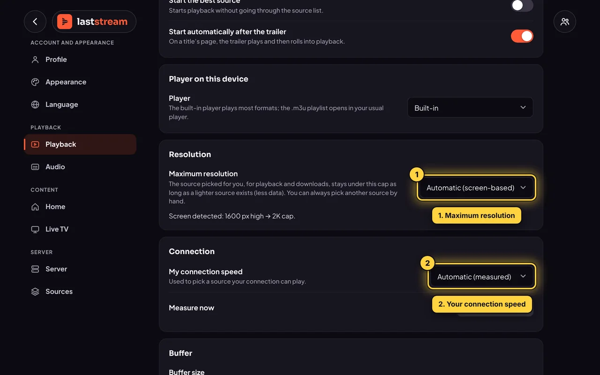
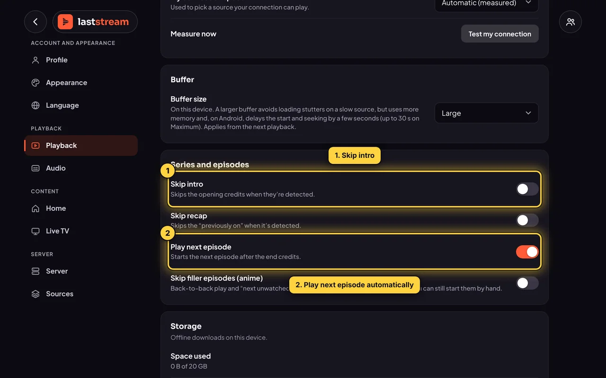
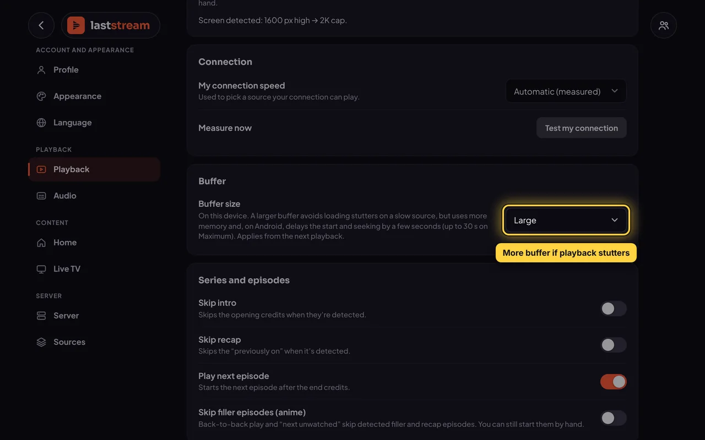

Steps
On each screenshot, the yellow frame shows where to tap or click; the numbers give the order. The app is in French: the screenshots show its English translation.
-
Open “Settings”, “Playback” category (1). “Start the best source” (2) starts playback without going through the source list.

-
“Maximum resolution” (1) caps the quality picked for you, to save data. “My connection speed” (2) leaves out sources too heavy for your connection: keep “Automatic (measured)” or pick a speed.

-
For series: “Skip intro” (1) skips the opening credits when they’re detected, “Play next episode” (2) starts the next one after the end credits. “Skip recap” skips the “previously on”.

-
If playback stutters on a slow source, raise the “Buffer size”: “Large” or “Maximum”.
